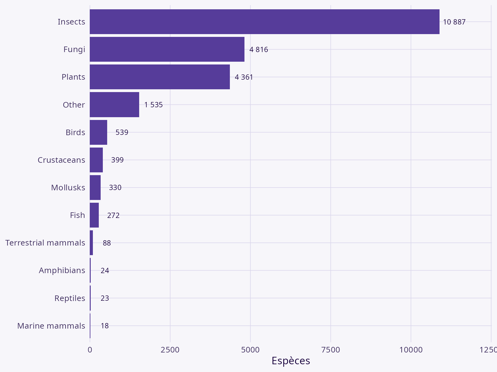
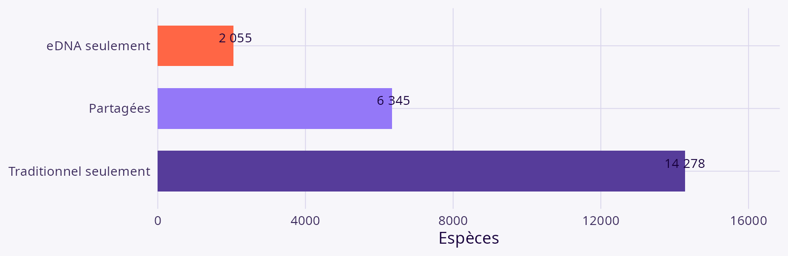
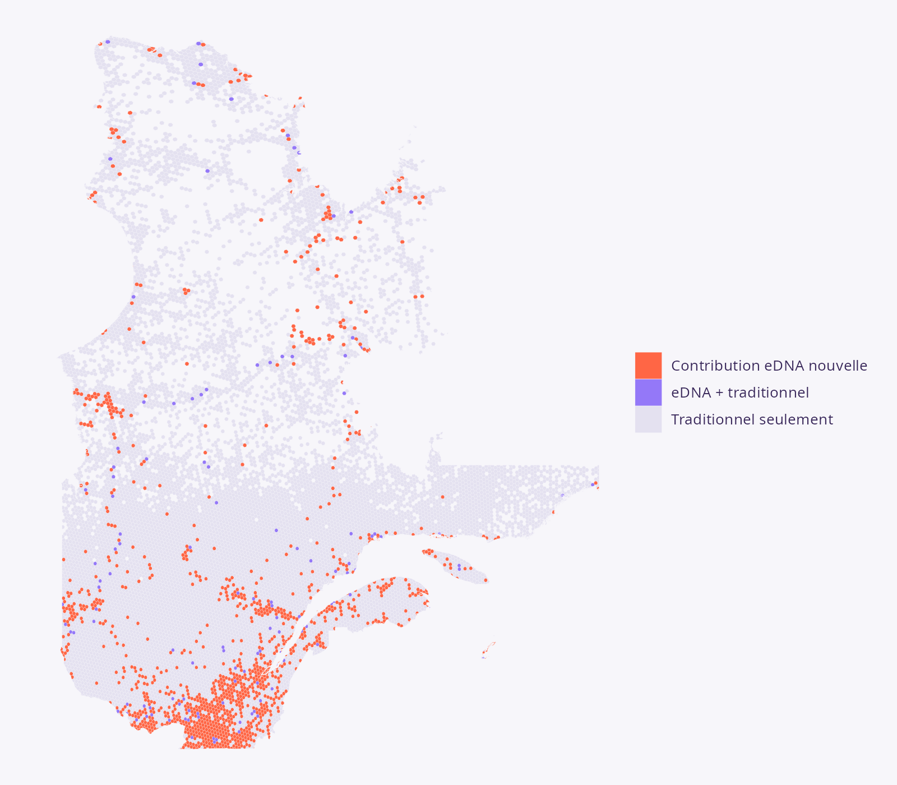
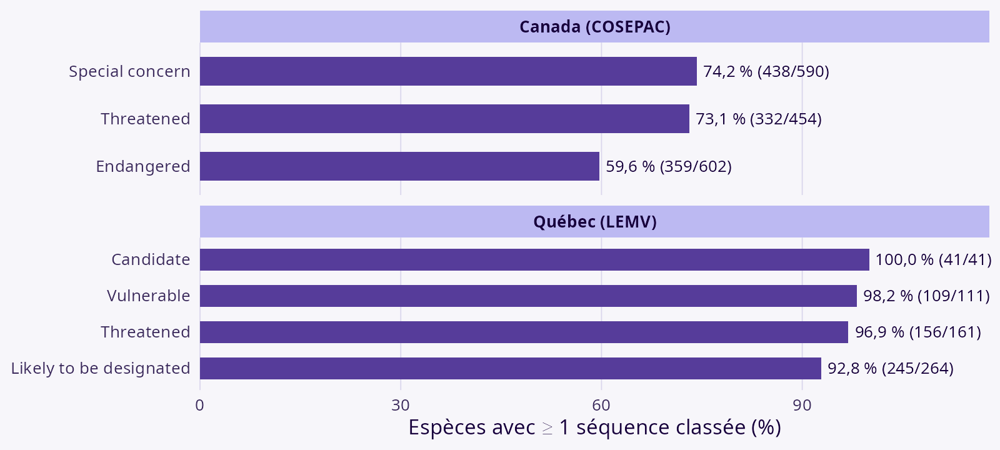
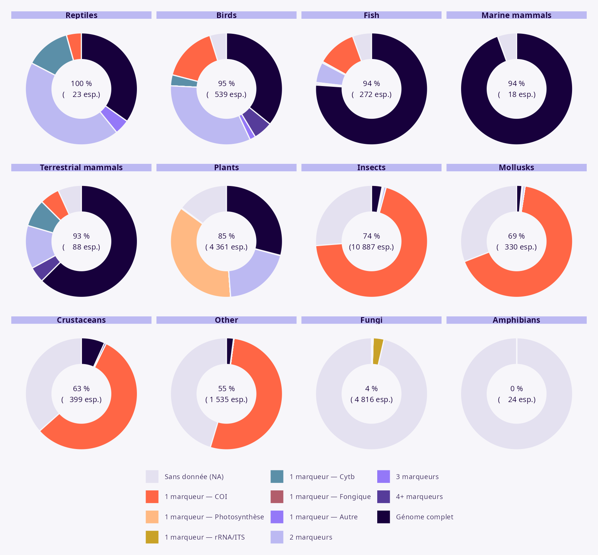
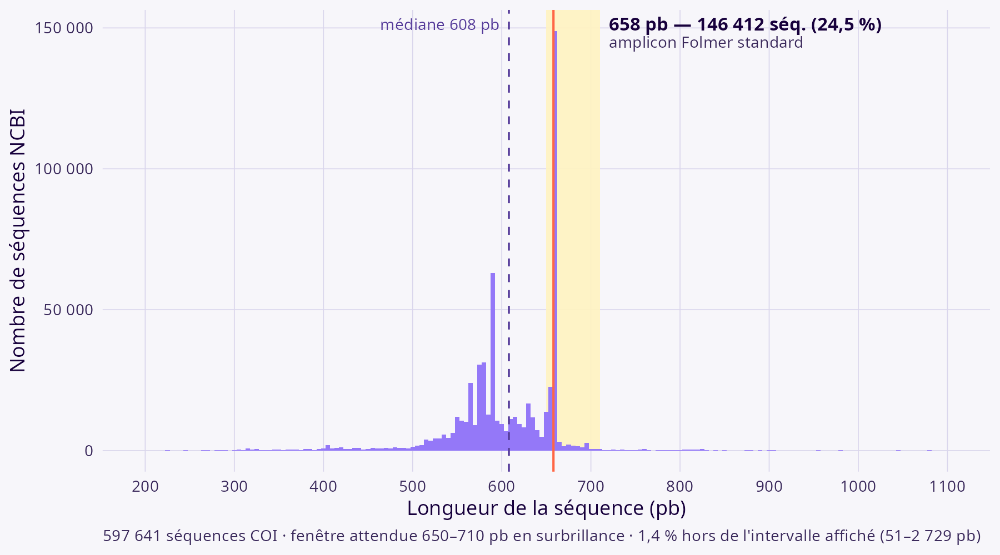

INRS
Genovalia / Université Laval
Note
Slide à compléter — résumé en une diapo une fois les résultats finalisés.
L’ADN environnemental (ADNe) : matériel génétique collecté directement dans l’environnement (eau, sol, air, etc.) sans avoir à capturer ou isoler l’organisme. Metabarcoding — détection simultanée de plusieurs taxons à partir d’un marqueur commun (approche retenue ici).
Le problème : répartition inégale des données de biodiversité (occurrence, génétique, interactions, traits) — trous souvent insuffisants pour faire du suivi. L’intégration de l’ADNe aux données d’occurrence est une voie naturelle pour les combler.
Avantages — réduit le fardeau taxonomique, détecte si présent (moins de fausses absences), empreinte spatiale et temporelle accrue.
Limites — librairies de référence incomplètes, assignations erronées, biais géographiques, contaminations, imprécision spatiale/temporelle.
La qualité dépend de trois maillons : échantillonnage, laboratoire, analyse bioinformatique — c’est ce dernier maillon (qualité des bases de référence) qui porte les librairies incomplètes et les assignations erronées (7 classes de biais documentées, Keck et al. 2022).
Au Québec : disposons-nous d’une bonne couverture génomique pour les taxons connus, et ces séquences comblent-elles les biais d’échantillonnage traditionnels ?
Deux affirmations à étayer par la littérature :
Pipeline reproductible (package R QCGenomLandscape, orchestré avec targets)
geo:province/state:Quebec)Attention : espèces domestiques exclues ; bactéries et protozoaires hors périmètre (couverture eDNA des espèces macroscopiques)
Tableau 1 & 2. Caractéristiques des observations (Atlas) et des séquences (NCBI/BOLD)
| Indicateur | Valeur |
|---|---|
| Espèces sur la liste BDQC | 23 710 |
| Espèces avec ≥ 1 séquence NCBI | 21 374 (90,1 %) |
| Espèces sans aucune séquence | 2 336 (9,9 %) |
| Enregistrements NCBI (voucher) | 911 819 |
| Enregistrements BOLD | 116 869 |
| Espèces avec génome mitochondrial | 2 634 (11,1 %) |
Note
Chiffres NCBI restreints à voucher[Title] (run en cache) — un prochain tar_make() lèvera ce filtre. Résumé Atlas au niveau enregistrement à compléter.

Sur 22 678 espèces BDQC couvertes par au moins une approche : 6 345 vues par les deux, 2 055 eDNA seulement, 14 278 traditionnel seulement — Jaccard = 28,0 %

L’effet varie fortement selon le groupe taxonomique (log-ratio de richesse, Keck et al. 2022 : χ² = 22 118, ddl 11, p < 0,001) — pas un simple déficit uniforme.

| Juridiction | Statut | Espèces | Avec séquence | Couverture |
|---|---|---|---|---|
| Canada (COSEPAC) | Toutes catégories | 1 646 | 1 129 | 68,6 % |
| Canada (COSEPAC) | Endangered | 602 | 359 | 59,6 % |
| Québec (LEMV) | Toutes catégories | 577 | 551 | 95,5 % |
| Québec (LEMV) | Vulnerable | 111 | 109 | 98,2 % |
Contribution eDNA spécifique : 61 espèces à statut CA (9,2 %) et 27 QC (22,9 %) détectées uniquement par eDNA — dont Lamna nasus, Thunnus thynnus (Endangered)

Part des espèces par groupe avec génome complet, 1 seul marqueur, 2, 3 ou 4+ marqueurs distincts, ou sans donnée

Un quart des 597 641 séquences COI font exactement 658 pb (amplicon Folmer), mais la médiane (608 pb) tombe sous cette fenêtre — l’essentiel du dépôt est plus court que le barcode standard.
| Marqueur | n | Médiane (pb) | Codon stop (%) | CV intra-espèce médian |
|---|---|---|---|---|
| COI | 597 641 | 608 | 4,01 | 6,5 % (homogène) |
| rbcL / matK | 70 607 | 640 | 21,76 | 24,2 % (hétérogène) |
| Nuclear rRNA / ITS | 1 327 606 | 152 | 96,08 | — |
Cas extrême : Poa trivialis (trnL, n = 9), longueurs 53–1 766 pb — mini-barcode et intron complet déposés sous la même étiquette.

Design d’une nouvelle plateforme pour intégrer les données d’occurrence et de génomique — avec contrôle de la qualité et harmonisation des sources (BOLD, NCBI, Atlas) au cœur du design.
Vissault · Fuster · Gravel · Brochu · Langlois